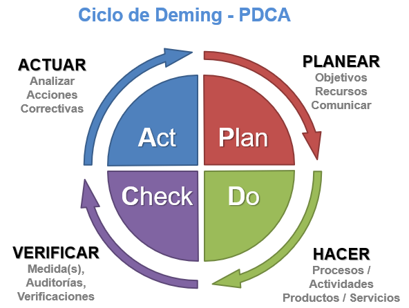

PROMOCIONAR A CONTROLADOR DE DOMINIO
GESTIONAR POR REMOTO http://ip:8098
RECURSOS COMPARTIDOS PARA VENTAS, ADMINISTRACIÓN, RRHH. PROGRAMACIÓN, TECNICO
GENERAR UNIDADES ORGANIZATIVAS
PODER ACCEDER CON TECNICO POR REMOTO POR TELNET Y SSH
ESTABLECER POLÍTICA DE COPIAS DE SEGURIDAD
REVISAR PROCESOS POR LA TERMINAL
CAMBIAR LA IP DESDE LA TERMINAL
COMPARTIR ARCHIVOS LINUX-WINDOWS CON SAMBA
MIRAR LOS SERVICIOS DE UNA MÁQUINA LINUX
COMPROBAR EL FUNCIONAMIENTO DE SERVICIOS Y FIREWALL
DEFENDER DE UN ATAQUE DoS PREVINIENDO PING
1) En relación a la ISO 27002 que es cierto
2) La 27002 tiene varias secciones
3) La LOPD cual es el ámbito de aplicación
4) 27002 a que se refiere con preservación de la integridad, confidencialidad y disponibilidad de la información
5) En una política de seguridad son correctas estas afirmaciones
La biblioteca de Infraestructura de Tecnologías de Información (ITIL) se considera el estándar mundial en la gestión de servicios informáticos.
La Biblioteca de Infraestructura de Tecnologías de Información (ITIL o Information Technology Infrastructure Library) se crea como un conjunto de buenas prácticas para alcanzar una correcta gestión de los servicios TI. En ella, se describen detalladamente procedimientos de gestión que sirven para:
Creada alrededor de 1980, aunque fue a mediados de los noventa cuando tuvo una mayor adopción y estandarización.
La iniciativa de su elaboración y desarrollo la tuvo el Gobierno británico a través de la Agencia para las Telecomunicaciones y Ordenadores Centrales (CCTA, Central Computer and Telecommunications Agency), en respuesta al crecimiento de dependencia de las TI: a medida que estas (las TI) se iban implantando, se necesitó establecer estándares de gestión para ahorrar redundancias, duplicidades, costes y errores innecesarios.
Después la Oficina de Comercio Gubernamental (OGC, Office of Governance Commerce) continuó su gestión y desarrollo hasta la actualidad.
En su versión 1 v1 contaba de 10 libros y se centraba en el soporte y prestación de los servicios, orientada a la tecnología de los Mainframe (ordenadores grandes y caros utilizados por grandes empresas para el manejo de gran volumen de datos) durante la década de los 80 ITIL fue creciendo hasta alcanzar 42 volúmenes..
en su versión v2 comienzan a cobrar importancia los procesos y servicios. y se dedican libros a la Provisión y soporte a servicios.
Su versión v3 nace en el año 2007 y es actualizada en 2011, continuando la integración de la tecnología y el negocio. Continúan los conceptos de provisión y soporte del servicio y sigue estando orientada a procesos.
Se reestructura en 5 fases que corresponden al ciclo de vida del servicio ofreciendo flexibilidad en la gestión de los servicios.
Los servicios tienen una vida finita y van pasando por fases desde el lanzamiento hasta la retirada del mercado. ITIL v3 contiene 5 libros que se corresponden a las 5 fases de vida del servicio que se retroalimentan de modo cíclico.

como virtualizar
ip estática a windows,
promocionar controlador de dominio,
instalar ftp y web => iss+ftp publico y privado
gestionar por remoto (https://ip:8098),
recursos compartidos para ventas, administración rrhh, programación, tecnico
crear cuentas (usuarios y contraseñas) para cada grupo, dos de cada
generar unidades organizativas,
cuenta técnico y operador con permisos.
entrar al servidor por esas cuentas y que pueden acceder por remoto por telnel y ssh),
establecer política de copias de seguridad automatizada.
Como revisar procesos por la terminal procesos (taskill y net start) taskkill /F /IM /PID 3248
Para virtualizar lo primero es abrir Virtualbox y dar a Maquina nueva
Elegimos nombre y elegimos que queremos une Windows 2003 de (32bits)
Le ponemos de RAM mínimo 512MB puede hasta 4096 MB
De disco duto elegimos tamaño fijo y le ponemos 20 GB
Vamos a Configuración, red y ponemos que sea en adaptador puente
Damos a iniciar, seleccionamos la iso correspondiente y damos a instalar
Si es necesario le hacemos alguna partición y sino damos a formateado rápido NTFS
Elegimos el nombre del equipo y ponemos la clave de producto, ponemos conexiones simultaneas 9999, elegimos el nombre netbios y hora
Damos botón derecho en mis sitios de red => Propiedades => botón derecho conexiones de area local => Propiedades. Seleccionamos protocolo de internet TCP/IP y damos a propiedades
Damos a usar la siguiente dirección IP y ponemos
Dirección IP: 192.168.1.180
mascara subred: 255.255.255.0
puerta de enlace predeterminada: 192.168.1.180
Servidor DNS preferido: 127.0.0.1
Servidor DNS alternativo: 192.168.1.180
Luego damos a opciones avanzadas y metemos las dns 8.8.8.8 y 8.8.4.4 y aceptamos todo hasta salir ya.
Hacemos Inicio => Ejecutar => dcpromo
Se nos abre el asistente y vamos dando a siguiente, damos a crear un dominio nuevo, nuevo bosque, ponemos nombre al dominio (clase2022.net), damos a siguiente e instalamos y configuramos equipo para que sea nuestro servidor DNS preferido, damos permisos compatibles para servidores 2000 y 2003 damos a finalizar y reiniciamos la maquina cuando nos lo indica.
Para instalar FTP vamos a Panel de control => Agregar o quitar programas => agregar componentes de Windows => damos a instalar Internet Information Services (IIS) y elegimos Servicio de Protocolo de transferencia de archivos (FTP). Damos a aceptar y ya se instala.
Para instalar WEB vamos a Panel de control => Agregar y quitar programas => agregar o quitar componentes de Windows => damos a instalar Internet Information Services (IIS) y elegimos Servicio World Wide Web y aceptamos todo
Para instalar WEB vamos a Panel de control => Agregar y quitar programas => agregar o quitar componentes de Windows => damos a instalar habilitar el acceso de red DTC y damos a aceptar todo
Ahora si vamos a https://(192.168.1.180):(8098)
no pide una cuenta y metemos con técnico y su contraseña 123456 y ya podemos gestionar el servidor por remoto en vía web.
Primero creamos las carpetas con md C:\Ventas
md C:\Administracion
md C:\RRHH
md C:\Programacion
md C:\Tecnico
Para promocionarla usamos el comando net share Ventas=Ventas
net share Administracion=Administracion
net share RRHH=RRHH
net share Programación=Programacion
net share Tecnico=Tecnico
Vamos a Inicio => Herramientas administrativas => usuarios y equipos de Active Directory y => damos click en clase2022.net => damos botón derecho =>nuevo => unidad organizativa y creamos ahí la de Ventas, Administración, RRHH, Programación, Tecnico
Vamos a crear usuarios con la terminal con el comando:
net user Ventas1 123456 /add
net user Administracion1 123456 /add
net user RRHH1 123456 /add
net user Programacion1 123456 /add
net user Tecnico1 123456 /add
Nos volvemos a Inicio => Herramientas administrativas => usuarios y equipos de Active Directory
y damos click en clase2022.net y vamos a users y volvemos cada usuario a su grupo correspondiente.
Nos vamos a Inicio => Herramientas administrativas => usuarios y equipos de Active Directory y => seleccionamos la cuenta técnico y damos botón derecho => Propiedades => Miembro de => y damos a agregar todos los permisos
Activamos telnet con Inicio => ejecutar => service.msc
Cambiamos a tipo automático y damos a iniciar y aceptamos
Para conectarnos por remoto vamos a otro sistema y por la terminal ponemos ssh tecnico@192.168.1.220
Para conectarnos por ssh con windows podemos usar el putty que nos lo descargamos de su página web y ponemos la IP y puerto 22.
Vamos a Inicio => Ejecutar => ntbackup
Se nos abre el asistente y damos a empezar con modo asistente, le decimos que queremos efectuar una copia de seguridad de archivos, damos a elegir lo que deseo incluir, seleccionamos lo que queremos.
Seleccionamos donde las ubicamos y antes de dar a finalizar damos a opciones avanzadas, damos a comprobar datos y deshabilitar instantánea, damos a anexar copia de seguridad a existentes y damos a más adelante en cuando desea realizar la copia y ahí podemos programarla que sea una semanal y damos a aceptar y una vez ya finalizamos. Una vez hecha la copia podemos ver el informe.
Podemos ver los procesos con el comando tasklist y para matar algún proceso con taskkill/PID número.
Para matar todos los procesos que se llaman igual con taskkill /F /IM nombreproceso
Para ver los servicios que están iniciados con net start
Para parar uno con net stop nombreproceso
Como virtualizar,
Cambiar la ip a través de la terminal, /etc/netplan/00-installer-config.yaml y luego netplan apply
actualizar el servidor
servicio web apache2
instalar ftp
configure el servidor para que pueda ser gestionado por web (webmin, cockpit)
compartir archivos entre Linux-Windows (samba)
mirar los servicios de una maquina ubuntu (service –status-all),
crear usuario con privilegios (usermod -aG sudo (nombrecuenta) )
instalar ssh y telnet
comprobar el funcionamiento de servicios y firewall (ufw enable)
generar informe de los procesos
genere de todo lo anterior informe que muestren por pantalla y que lo muestre por documentos (comando |tee (nombrearchivo))
Defender de un ataque DoS previniendo ping, iptables -I INPUT -p icmp --icmp-type 8 -j DROP
instalar nmap escaner intensivo(nmap -O ip) y otro rápido generando informe (nmap T4 ip)
informe de auditoria con lynis
Nos vamos a Virtualbox y damos a Maquina => Nueva la nombramos y seleccionamos que es tipo Linux versión Ubuntu 64bits, de RAM mínimo 1024MB lo ideal serían 4096MB y le damos un disco de tamaño fijo de 20 GB. Una vez creado importante ir a Configuración => Red y poner adaptador puente luego ir a sistema Procesador y poner 2 procesadores y en almacenamiento meter la iso correspondiente.
Ponemos el idioma y el teclado en español , nos vamos en conexciones red a enp0s3, damos enter y damos a edit ipv4, damos a manual y ponemos
Subred = 192,168,1,0/24
dirección = 192.168.1.210
puerta de enlace = 192.168.1.1
servidores de nombre = 8.8.8.8,8.8.4.4.194.224.52.36,194.224.52.37
dominios de búsqueda = 8,8,4,4
damos a salir, no metemos proxy, dejamos como esta la mirror address para las actualizaciones, dejamos el disco como esta y damos a continuar
Seleccionamos el perfil
nombre: usuario1
nombre del servidores: ubuntuserver2004
nombre usuario: usuario1
contraseña: 123456
No tenemos token damos a seguir e instamos ahora el openssh y damos a seguir, no bajamos mas paquetería y ay se instala, una vez acabado se reinicia la maquina
activamos la cuenta root con sudo passwd root y le ponemos de contraseña 123456 y para actualizar el servidor nos metemos en la cuenta root con su – root y ponemos el comando apt-get update && apt-get upgrade && apt-get dist-upgrade && apt-get autoremove && apt-get autoclean
Usamos el comando nano /etc/netplan/00-installer-config.yaml y ahi la podemos modificar, una vez hecho para aplicar damos a netplan apply y ya se cambia, si hacemos un ifconfig ya sale cambiada.
Instalamos el paquete con sudo apt-get install apache2
Si vamos a cualquier pagina y ponemos http://192.168.1.210 ya la veríamos
Guarda los archivos en /etc/apache2 y la pagina la carga desde /var/www/html
Instalamos el ftp con sudo apt-get install vsftpd
para conectarnos desde otro ordenador ponemos ftp
luego ponemos open 192.168.1.210
y ponemos una cuenta ejemplo tecnico con contraseña 123456
Podemos hacerlo con el cokpit que para instalarlo es con sudo apt-get install cockpit
Para gestionar por web vamos a un navegador y ponemos https://192.168.1.210:9090 y entramos con cuenta tecnico o root
También podemos con el webmin que para descargarlo buscandolo en el navegador y nos vamos el instalador para debian y lo instalamos a traves de gdebi
Para gestionar por web vamos a un navegador y ponemos http://192,168,1,210:10000 y entramos con cuenta tecnico o root
nos descargamos camba con sudo apt-get install samba smbclient
Miramos que esta activo con service smbd status y service nmbd status
Creamos carpetas en /mnt
Y creamos por ejemplo sudo mkdir /mnt/Contabilidad
Les damos privilegios con sudo chmod -R 777 Contabilidad
Para compartir carpetas editamos el nano /etc/samba/smb.cong
[CONTABILIDAD]
comment = solo para contabilidad
path = /mnt/Contabilidad
browseable = yes
read only= no
ahora importante
Creamos la cuenta contabilidad1 con sudo useradd contabilidad1
La metemos en samba con sudo smbpasswd -a contabilidad1
Ahora restauramos los servicios con sudo systemctl restart nmbd y sudo systemctl restart smbd
Para conectar nos vamos a cualquier maquina Red => conectar a unidad de red y ponemos
en Windows \\192.168.1.210\Contabilidad y damos a conectar con otras credenciales y metemos la cuenta de contabilidad1
en Linux con smb://192.168.1.210/Contabilidad
Podemos usar el comando service --status-all
Creamos la cuenta con sudo useradd tecnico
y le damos privilegios con sudo usermod -aG sudo tecnico
Instalamos tanto telnet como ssh con sudo apt-get install telnet telnetd ssh
Para conectarnos por por telnet ponemos telnet 192.168.1.210 y nos piede cuenta ejemplo tecnico
Con ssh nos conectamos con ssh tecnico@192.168.1.210
Mirar los servicios con service (nombre del servicio) status o systemctl status nombredelservicio.service
Miramos el firewall con service ufw status
lo activamos con ufw enable para ponerlo en el arranque
y para inciarlo con service ufw start
añadimos reglas con sudo ufw allow si es permitir y para denegar con sudo ufw deny
Para ver todas las reglas con sudo ufw status verbose
usamos el comando correspondiente y añadimos |tee nombrearchivo
usamos el comando iptables -I INPUT -p icmp --icmp-type 8 -j DROP y ya no pueden hacer ping al server
Instalamos nmap con sudo apt-get install nmap
Para hacer un escaner normal usamos nmap -sV -O -A 192.168.1.0/24
Para hacer un escaner intensivo usamos nmap –T4 -A -Pn 192.168.1.0/24
Para hacer un escaner rapido usamos nmap -T4 -F 192.168.1.0/24
instamos lynis con sudo apt-get install lynis
y hacemos la auditoria creando informe con sudo lynis -c |tee auditoria.txt